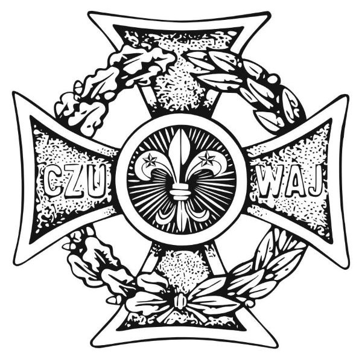

Strona Główna
Krzyż
Lilijka
WAGGS
WOSM
Kontakt
Symbolika Krzyża Harcerskiego
Okrąg pośrodku krzyża
Promienie rozchodzącę się od lilijki
Wieniec z dębu i wawrzynu
Hasło "Czuwaj"
Ziarna piasku na ramionach Krzyża Harcerskiego
Puste miejsce pomiędzy ziarenkami piasku
Dwie gwiazdki na lilijce
Trzy żołędzie na wieńcu dębowym krzyża
